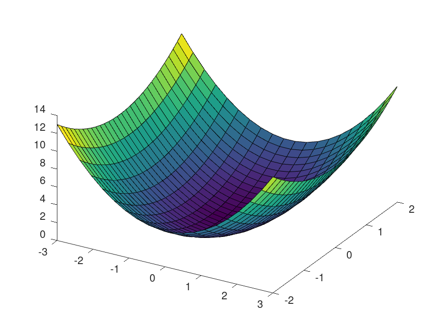

Bad OO Acoustics simulation toolbox (booast)
Table of Contents
1 General Information
The Bad OO Acoustics simulation toolbox (booast) provides some means for simulating acoustic problems using Octave or Matlab(tm).
In particular, it provides two new matlab/octave classes, vector and vectorgrid. These can be used to implement arrays of vectors pointing to a location in \(\mathbb R^3\).
1.1 Naming conventions
Some naming conventions for octave variables are used throughout the documentation.
1.1.1 Variables
| N | constant |
| n | variable |
| nA | vector containing \(A\) values |
| nAB | matrix with dimensions \(A\times B\) |
| nABC…Z | matrix with dimensions \(A\times B\times \ldots \times Z\) |
1.1.2 Coordinate Systems
| system | variables 2D | variables 3D |
|---|---|---|
| cartesian | \(x,y\) | \(x,y,z\) |
| polar | \(r, \phi\) | \(r, \phi, z\) |
| spherical | - | \(r,\theta, \phi\) |
2 Vector
A new class vector is defined. It serves to handle 3-dimensional information using mathematical vectors or matrizes of vectors.
2.1 Class
2.1.1 Syntax
v = vector(s, S_type); v = vector(s1, s2, S_type); v = vector(s1, s2, s3, S_type); v = vector(s1, s2, s3, ..., S_type);
2.1.2 Description
vector() returns a vector v of class vector.
2.1.3 Input Arguments
s1, s2, ...are matricesS_typetype of the coordinate system ('cartesian', 'spherical' or 'polar')
2.1.4 Return Values
vvector object
2.1.5 Examples
- four parameter input
single values for each dimension
x = 1; y = 2; z = 3; S_type = 'cartesian'; v = vector(x, y, z, S_type); isavector = isa(v, 'vector')
- two parameters imput
vector positions in a matrix
x = [1; 2; 3]; S_type = 'cartesian'; v = vector(x, S_type); ans = isobject(v);
As long the first dimension is 3, we can input matrices of any dimension.
x = rand(3, 4, 6, 7); S_type = 'cartesian'; v = vector(x, S_type); ans = size(v);
- one parameter input
we use vectorgrid as input type
x = linspace(0,10, 10); y = x; z = x; S_type = 'cartesian'; g = vectorgrid(x, y, z, S_type); v = vector(g); ans = size(v);
2.2 Methods
Methods for class vector.
2.2.1 display
2.2.2 size
2.2.3 numel
2.2.4 dimensions
function d = dimensions(st) % Copyright (c) 2018-2021 Johann-Markus Batke (johann-markus.batke@hs-emden-leer.de) % % Permission is hereby granted, free of charge, to any person obtaining a copy % of this software and associated documentation files (the "Software"), to deal % in the Software without restriction, including without limitation the rights % to use, copy, modify, merge, publish, distribute, sublicense, and/or sell % copies of the Software, and to permit persons to whom the Software is % furnished to do so, subject to the following conditions: % % The above copyright notice and this permission notice shall be included in all % copies or substantial portions of the Software. % % THE SOFTWARE IS PROVIDED "AS IS", WITHOUT WARRANTY OF ANY KIND, EXPRESS OR % IMPLIED, INCLUDING BUT NOT LIMITED TO THE WARRANTIES OF MERCHANTABILITY, % FITNESS FOR A PARTICULAR PURPOSE AND NONINFRINGEMENT. IN NO EVENT SHALL THE % AUTHORS OR COPYRIGHT HOLDERS BE LIABLE FOR ANY CLAIM, DAMAGES OR OTHER % LIABILITY, WHETHER IN AN ACTION OF CONTRACT, TORT OR OTHERWISE, ARISING FROM, % OUT OF OR IN CONNECTION WITH THE SOFTWARE OR THE USE OR OTHER DEALINGS IN THE % SOFTWARE. d = st.dims;
2.2.5 get
- Description
vector - returns the content of a vector object
- Syntax
a = get(v, S_type, D_dim)
- Input Arguments
vvector objectS_typestring with ('cartesian'|'polar'|'spherical')D_dimvector with dimensions ofv(optional)
- Return values
amatrix with 3 rows and elements according toS_typeandD_dimdimensions. - Examples
Known points on a sphere are easier to recognise, so let us test this (including some coordinate transformation):
v = vector([0, 0, 1]', 'cartesian'); get(v, 'spherical')
1 0 0 …or take the south pole
v = vector([0, 0, -1]', 'cartesian'); get(v, 'spherical')
1 3.141592653589793 0 …or hit the equator in the east
v = vector([0, 1, 0]', 'cartesian'); get(v, 'spherical')
1 1.570796326794897 1.570796326794897 …or, where is Africa?
v = vector([1, 0, 0]', 'cartesian'); get(v, 'spherical')
1 1.570796326794897 0 v = vector(rand(3, 3, 5, 6), 'polar'); ans = size(get(v, 'cartesian'));
3 3 5 6
2.2.6 set
- Description
setmodifies the vector objectsetmodifies the input vector object by replacing its values by values from the matrix a taken coloumn-wise. Obtained vector object has a type according to the input value ofS_type. - Syntax
v = set(v, a, S_type)
- Input Arguments
vexisting vector objectamatrix with 3 rows and coordinate valuesS_typetype of coordinate system'cartesian'|'spherical'|'polar' - Return Values
vmodified vector object - See also
vector, reshape
2.2.7 normalize
2.2.8 scale
- Syntax
vc_AB = scale(a_A, vb_B)
- Description
scalescales all vector object coordinates (by vector's scalar values) - Input Arguments
a_Ascalar valuevb_Bvector object (struct) with B vectors
- Return Values
vc_AB- scaled vector (vector object)
- Examples
Fall: 1 Vektor, 1 Scalar, 1 Wort ;)
v = vector([1, 0, -1]', 'cartesian'); s = 2; v = scale(s, v); ans = get(v, 'cartesian')';
2.2.9 plot
@vector/plot.m: plot positions of a vector using a marker
2.2.10 Syntax
plot(v, '*')
2.2.11 Description
plots position of v in 3D space
2.2.12 Input Arguments
- v
- vector
- s
- marker like "*"
2.2.13 Return Values
none
2.2.14 Examples
2.2.15 Tips
2.2.16 Alternatives
2.2.17 See Also
plot, plot3, ezplot
N_x = 10; M_y = 20; vg_NM = vectorgrid(linspace(0, 1, N_x), linspace(0, 1, M_y), 0, 'cartesian'); v_NM = vector(vg_NM); plot(v_NM, '+'); xlabel('x'); ylabel('y'); zlabel('z'); saveas(1, S_file); ans = S_file;
0
3 Vectorgrid
vectorgrid creates a grid of vectors.
3.1 Class
3.1.1 Syntax
st = vectorgrid(s1, s2, varargin) st = vectorgrid(s1, s2, S_type) st = vectorgrid(s1, s2, s3, S_type)
3.1.2 Description
vectorgrid holds all information necessary to create vectors of
class vector along axes s of coordinate system S_type. It
returns an object of class vectorgrid.
2-dimensional and 3-dimensional grids are supported. However due to restrictions in vector only 3-dimensional grids are fully supported!
3.1.3 Input Arguments
s1, s2, s3vectors of coordinate valuesS_typetype of the coordinate system ('cartesian', 'spherical' or 'polar')
3.1.4 Return Values
stvectorgrid
3.1.5 Examples
- TODO 2D
We look at some axes like
A = 20; B = 30; x_A = linspace(-3, 3, A); y_B = linspace(-2, 2, B);
A 2D vectorgrid is created via
vg_AB = vectorgrid(x_A, y_B, 'cartesian');
So, we have got
Variables in the current scope: Attr Name Size Bytes Class ==== ==== ==== ===== ===== x_A 1x20 160 double y_B 1x30 240 double vg_AB 20x30 417 vectorgrid Total is 51 elements using 817 bytes - 3D
We look at some axes like
A = 20; B = 30; C = 40; x_A = linspace(-3, 3, A); y_B = linspace(-2, 2, B); z_C = linspace(-4, 4, C);
A 3D vectorgrid is created via
vg_ABC = vectorgrid(x_A, y_B, z_C, 'cartesian');
So, we have got
Variables in the current scope: Attr Name Size Bytes Class ==== ==== ==== ===== ===== x_A 1x20 160 double y_B 1x30 240 double z_C 1x40 320 double vg_ABC 20x30x40 737 vectorgrid Total is 91 elements using 1457 bytes
3.1.6 See Also
meshgrid
3.2 Methods
3.2.1 size
- Syntax
Dim_g = size(g);
- Description
return dimensions of the grid.
- Input Arguments
gis a vectorgrid. - Output Arguments
Dim_gis a matrix containing the size information. - Examples
x = linspace(0,10, 194); y = x; z = x; S_type = 'cartesian'; g = vectorgrid(x, y(1:5), z(1:2), S_type); Dim_g = size(g)
194 5 2 - Tips
To determine the number of elements in a grid, use
prod(Dim_g)
- Alternatives
- See Also
display
3.2.2 display
3.2.3 type
3.2.5 reshape
3.2.6 grid
3.2.7 meshgrid
- Syntax
[x_YXZ, y_YXZ, z_YXZ] = meshgrid(st, S_type)
- Input arguments
stvectorgrid objectS_typecoordinate system; defaults to 'cartesian'.
- Return values
x_YXZ, y_YXZ, z_YXZmatrices of grid values
- Examples
- 3D
We could take the vectorgrid example as given by
A = 20; B = 30; C = 40; x_A = linspace(-3, 3, A); y_B = linspace(-2, 2, B); z_C = linspace(-4, 4, C); vg_ABC = vectorgrid(x_A, y_B, z_C, 'cartesian');
and convert is to a meshgrid like this:
[X_BAC, Y_BAC, Z_BAC] = meshgrid(vg_ABC);
The size of the output matrixes is
ans = 30 20 40
dimensions have changed due to the Octave/Matlab conventions.
- 3D
- Alternatives
An excursion to the Matlab/Octave meshgrid:
- 2D-Meshgrid using Matlab/Octave
A meshgrid in matlab/octave in 2D is defined like so:
A = 20; B = 30; x_A = linspace(-3, 3, A); y_B = linspace(-2, 2, B); [x_BA, y_BA] = meshgrid(x_A, y_B);
- 3D-Meshgrid using Matlab/Octave
A meshgrid in matlab/octave in 3D is defined like so:
A = 10; B = 20; C = 30; x_A = linspace(0, 3, A); y_B = linspace(0, 2, B); z_C = linspace(0, 1, C); [x_BAC, y_BAC, z_BAC] = meshgrid(x_A, y_B, z_C);
- 2D-Meshgrid using Matlab/Octave
3.2.8 subsref
- Syntax
g(n,m, ...) g(1:n, ...)
whith
gbeing a vectorgrid. So,gcan be treated as an ordinary matrix as usually given on Octave/Matlab. - Example
Let us look for a portion of a vectorgrid as follows:
% x = linspace(0,10, 99); y = x; z = x; S_type = 'cartesian'; g = vectorgrid(x, y, z, S_type); display(g(1:3,2,:));
Vectorgrid contains 3 axes. The coordinate type is cartesian. The size is 3 1 99To get the vector information from the vectorgrid, you need to use
vector:g = vectorgrid([1,2,3], [4,5], [6,7], 'cartesian'); x_xyz_XYZ = get(vector(g(3,:,:)), 'cartesian')
x_xyz_XYZ = ans(:,:,1,1) = 3 4 6 ans(:,:,2,1) = 3 5 6 ans(:,:,1,2) = 3 4 7 ans(:,:,2,2) = 3 5 7
3.2.9 TODO end (index)
3.2.10 surface
- Description
surfacetakes a vectorgrid as input argument and some values to display as a surface accordingly to the vectorgrid definition.If
g_CABholds a grid spanning all 3 dimensions, we need to slice the grid and restrict to a singular value for one axis. - Examples
This example illustrates the use of the method
surfaceforvectorgrid. The sectionsec:surfacealternatives discusses similar examples using Octave/Matlab's surface function.- 2D in 3D
We first create a vectorgrid to define some function.
A = 20; B = 30; C = 2; g_ABC = vectorgrid(linspace(-3, 3, A), linspace(-2, 2, B), linspace(0, 1, C), 'cartesian');
Now we invent some function. It should be defined for \(z = 0\). Therefore we slice this space from the grid:
g_AB1 = g_ABC(:,:,1);
The function should look like the example in the alternatives section sec:surfacealternatives. Here we define the function the booasty way:
r_xyz_AB = get(vector(g_AB1), 'cartesian'); s_AB = squeeze(sum(r_xyz_AB(1:2, :, :).^2, 1));
The same is achieved in an Octave/Matlab manner by
[X_BA, Y_BA, Z_BA] = meshgrid(g_AB1); s_BA = X_BA.^2 + Y_BA.^2;
where information is spread over several variables. However, it looks easier in this case…
Finally the results yields Figurefig:surface_example_2d_3d after stating
surface(g_AB1, s_AB);
so surface colors the slice defined by
g_AB1by valuess_AB.
Figure 2: A surface defined using booast.
- 3D in 3D
Using 'dependendSurface' we can show the data as a 3D plane in the 3D space. So we state
surface(g_1AB, s_AB, [], 'dependendSurface');
surface() colors the slice defined by
g_1ABby valuess_AB.
Figure 3: A surface defined using booast being dependend from the definition space.
- TODO 3D in 3D coloring
- 2D in 3D Spherical
We first create a vectorgrid to define some function.
C = 20; A = 30; B = 40; g_CAB = vectorgrid(linspace(0, 1, C), pi*linspace(0, 1, A), pi*linspace(-1, 1, B), 'spherical');
Now we invent some function. It should be defined for \(\theta = \pi/2\). Therefore we slice this space from the grid:
g_1AB = g_CAB(2,:,:);
The function is arbitrary…
r_rtp_AB = get(vector(g_1AB), 'spherical'); s_AB = squeeze(sum(r_rtp_AB, 1));
Finally the results yields Figurefig:surface_example_2d_3d after stating
surface(g_1AB, s_AB');
so surface colors the slice defined by
g_AB1by valuess_AB.
- 2D in 3D Spherical
- 2D in 3D
- Alternatives
As an alternative, we do the examples as tests solely using Octave/matlab's
surfacefunction.We use the meshgrid as shown in sectionmeshgridalternatives. A function
z_BAis defined using the grid information.A = 20; B = 30; x_A = linspace(-3, 3, A); y_B = linspace(-2, 2, B); [x_BA, y_BA] = meshgrid(x_A, y_B); z_BA = x_BA.^2 + y_BA.^2;
Therefore, we have got a function \(z = f(x, y)\).
- 2D in 3D
We want to present \(z = f(x, y)\) as a plane in the 3D space. Therefore, we need to
create a z-plane in space, e.g. at \(z = 0\)
s_BA = z_BA; % preserve results z_BA = zeros(size(x_BA)); % invent some values
show the z-plane, use \(f(x,y)\) for coloring
surface(x_A, y_B, z_BA, s_BA);
This results in a figure like shown in Figurefig:alternative_2d_in_3d_surface.
Figure 5: A 2D surface in 3D space showing a function \(f(x,y)\) for \(z = 0\) using colors.
- 3D in 3D
3D-Flche im 3D-Raum darstellen; und so sagt man es surface:

man kann auch die Meshgrid-Koordinaten an surface bergeben:

…dann kann man auch ganz leicht die Sache im Raum drehen:

…so eine Flche kann man auch anderweitig bemalen:

- 2D in 3D